Le batteur devient coureur et a le droit à la première base sans danger d’être retiré (à condition qu’il avance vers et touche la première base) quand : Le receveur ou un défenseur quelconque le gêne [OBR 5.05(b)(3)].
Exemple 35:
Lorsque les coureurs sont contraints d'avancer en raison d'une interférence, cela est enregistré avec le numéro de
l'ordre de passage au bâton du frappeur.
Tout coureur qui, après avoir obtenu la première base pour interférence, refuse d'avancer, est éliminé et se voit
attribuer un temps de passage au bâton.
| WBSC | Transcription dans l'outil de scorage | Outil |
|---|---|---|
|
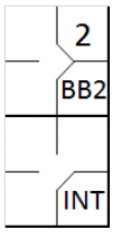 |
/* Le premier batteur gagne la première base sur un 'base on ball' */ action { batter -> BB } /* Le batteur suivant gagne la première sur une interférence du receveur */ action { batter -> INT , runner1 -> + } |
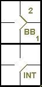 |
Exemple 36: En règle générale, une fois que le receveur gêne le frappeur et que l'arbitre a signalé l'interférence, la balle est morte, le frappeur obtient la première base et aucun coureur ne peut avancer à moins d'y être forcé.
| WBSC | Transcription dans l'outil de scorage | Outil |
|---|---|---|
|
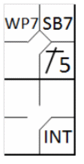 |
/* Le premier batteur frappe un simple vers la troisième base */ action { batter -> 1B5 } /* Le coureur vole la deuxième base */ action { runner1 -> SB } /* puis profite d'un lancer fou pour avancer */ action { runner2 -> WP } /* Le batteur suivant gagne la première sur une interférence du receveur */ action { batter -> INT } |
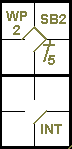 |
Exemple 37: Avec moins de deux retraits et un coureur en troisième base, le frappeur, malgré une interférence, réussit à frapper un fly, permettant au coureur de marquer. Le coatch de l'équipe offensive, une fois l'action terminée, peut choisir de conserver le point et de laisser le frappeur être retiré ou …
| WBSC | Transcription dans l'outil de scorage | Outil |
|---|---|---|
|
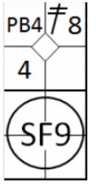 |
/* Le premier batteur frappe un double dans le champ centre */ action { batter -> 2B8 } /* Le coureur en 2 profite d'une balle passée pour gagner la troisième base */ action { batter -> PB } /* Le frappeur frappe un fly dans le champ droit qui est rattrapé de volée par le défenseur, le coureur marque le point */ action { batter -> SF9 , runner3 -> + } |
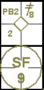 |
Exemple 38: pour maintenir le coureur en troisième base et le frappeur en première.
| WBSC | Transcription dans l'outil de scorage | Outil |
|---|---|---|
|
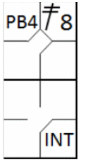 |
/* Le premier batteur frappe un double dans le champ centre */ action { batter -> 2B8 } /* Le coureur en deux profite d'une balle passée fou pour avancer en 3 */ action { batter -> PB } /* Le batteur suivant atteint la première base sur une interférence du receveur */ action { batter -> INT } |
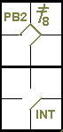 |
Exemple 39:
Le premier frappeur réussit un simple.
Le deuxième coureur obtient un but sur balles et force le coureur à se rendre en deuxième base.
Le receveur gêne le troisième coureur et force les deux autres à avancer.
Les bases sont maintenant pleines.
Toutes les progressions des coureurs sont légales.
Le quatrième frappeur est retiré sur trois prises.
Le cinquième frappe un infield fly qui est déclarée comme telle par l'arbitre.
Le sixième frappeur subit également une interférence. Le premier frappeur marque le point. Ceci est enregistré par
le numéro de frappeur concerné.
Si, malgré l'interférence, le frappeur parvient à frapper la balle et à créer une action avec des coureurs sur
les bases, l'arbitre signalera l'irrégularité et laissera l'action se poursuivre.
Une fois l'action terminée, le coatch concerné peut choisir de renoncer à la pénalité pour obstruction ou d'accepter
la situation résultant du coup.
| WBSC | Transcription dans l'outil de scorage | Outil |
|---|---|---|
|
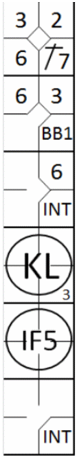 |
/* Le premier batteur frappe un simple dans le champ gauche */ action { batter -> 1B7 } /* Le batteur suivant gagne la première base sur un 'base on ball', le coureur avance */ action { batter -> BB , runner1 -> + } /* Le batteur suivant gagne la première base sur une interférence du receveur, les coureurs avancent */ action { batter -> INT , runner1 -> + , runner2 -> + } /* Le batteur suivant est retiré un strike looké */ action { batter -> KL } /* Le batteur suivant est retiré un infeild fly vers la troisième base */ action { batter -> IF5 } /* Le batteur suivant gagne la première base sur une interférence du receveur, les coureurs avance */ action { batter -> INT , runner1 -> + , runner2 -> + , runner3 -> + } |
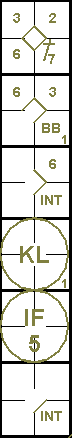 |
Exemple 40:
Avec un coureur en deuxième base, le receveur gêne le frappeur au moment où celui-ci amortit la balle, ce qui permet
au coureur d'avancer.
Une fois le frappeur éliminé en première base, le coatch a la possibilité de choisir d'accepter ou non la situation
créée après le sacrifice. …
| WBSC | Transcription dans l'outil de scorage | Outil |
|---|---|---|
|
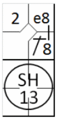 |
/* le premier batteur frappe un hit dans le champ centre, et profite de l'erreur du
défenseur pour gagner la deuxième base */ action { batter -> 1B8 e8 } /* Le batteur suivant frappe un bunt sur le lanceur qui renvoie la balle au défenseur de la première base pour retirer le batteur coureur. Le coureur en 2 avance */ action { batter -> SH13 , runner2 -> + } |
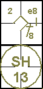 |
Exemple 41: pour ramener le coureur en deuxième base et le frappeur-coureur en première.
| WBSC | Transcription dans l'outil de scorage | Outil |
|---|---|---|
|
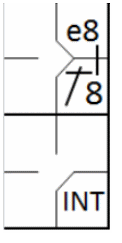 |
/* le premier batteur frappe un hit dans le champ centre, et profite de l'erreur du
défenseur pour gagner la deuxième base */ action { batter -> 1B8 e8 } /* Le batteur suivant gagne la première base sur une interférence du receveur */ action { batter -> INT } |
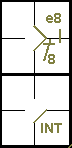 |
La règle 5.05(b)(3) de l'OBR prévoit que, si un joueur de champ interfère avec le frappeur et qu'un coureur sur la troisième base tente de marquer par un vol ou un amorti , le coureur marque et le frappeur se voit attribuer la première base (également OBR 6.01(g)).
La règle 5.06(b)(3)(D) de l'OBR stipule que tout autre coureur présent ne peut avancer que si, au moment de l'interférence, il tentait de voler une base.
Exemple 42:
Pendant que le coureur en troisième base court vers le marbre pour profiter du sacrifice de son coéquipier au
marbre, le receveur interfère avec le frappeur.
Le balle est morte et un point est marqué.
Le frappeur-coureur obtient la première base. Le coureur, déjà engagé, se voit attribuer une base volée.
| WBSC | Transcription dans l'outil de scorage | Outil |
|---|---|---|
|
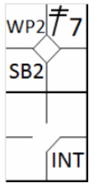 |
/* le premier batteur frappe un double dans le champ gauche */ action { batter -> 2B7 } /* Le coureur en 2 avance en 3 sur un lancer fou */ action { runner2 -> WP } /* Le coureur en 3 vole le marbre et marque un point */ action { runner3 -> SB } /* Le batteur gagne la première base sur une interférence du receveur */ action { batter -> INT } |
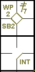 |